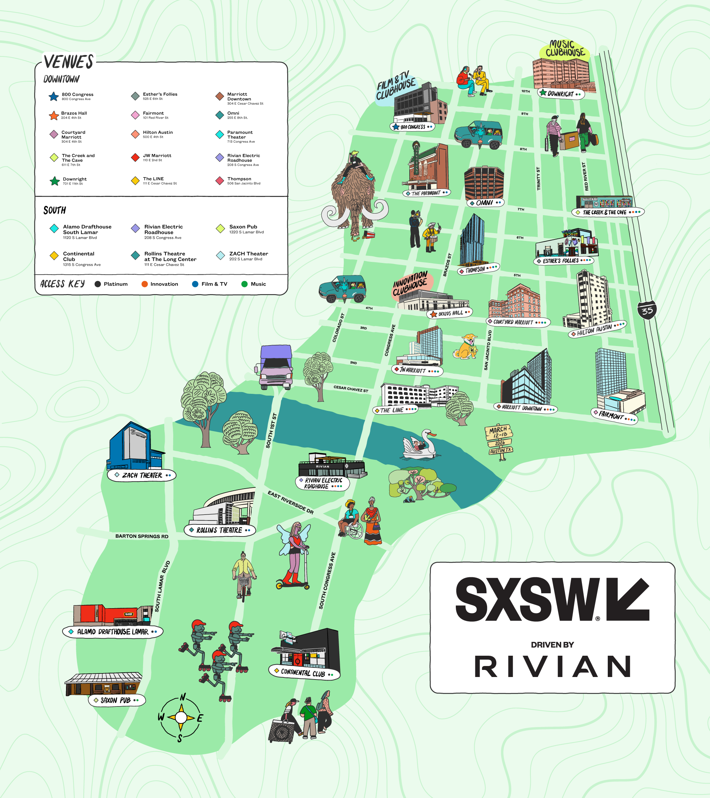

I've been to SXSW six times now. I know what to expect. The chaos, the crowds, the free beer, the networking, the late nights, the questionable food trucks, the feeling of being overstimulated for ten days straight. What I didn't expect was how it would completely destroy my fasting schedule. And I definitely didn't expect how long it would take to recover from it.
Last year was my worst year. I went into SXSW with a solid routine. I had been fasting for over a year, eating from 11 AM to 5 PM, feeling great. My sleep was good, my energy was stable, my digestion was smooth. I told myself I would stick to my routine even during the festival. I was a fool. By day three, my schedule was in shambles. I was eating breakfast tacos at 9 AM because a friend insisted they were "the best in Austin." I was drinking free beer at 2 PM because that's what you do at a tech panel. I was eating pizza at midnight because there was no other option. By the end of the festival, I had gained three pounds, my sleep was a disaster, and my fasting felt impossible.
The reason SXSW is so hard on fasting is simple. It's a social event, and social events revolve around food and drink. You can't say no to everything without making people uncomfortable. You can't bring your own food everywhere. You can't stay in your hotel room and meditate while everyone else is networking. So you adapt. And adaptation leads to chaos.
The week after SXSW was even worse. I was tired, bloated, and my cravings were out of control. I kept reaching for sugar and caffeine to compensate for the energy loss. My fasting schedule was all over the place. Some days I ate at 10 AM. Some days I didn't eat until 2 PM. I had no structure. My body was confused. I felt like I was starting from zero.
That's when I decided to build a 7‑day recovery plan. Not a plan to lose the three pounds, but a plan to reset my rhythm. I had learned from past mistakes that punishing myself with a long fast right after a break was a bad idea. It just made me miserable and more likely to binge. So I tried a different approach. Gradual reintroduction of structure, combined with a lot of sleep and hydration.
Day one, I didn't try to fast. I just ate three meals at reasonable times and drank a lot of water. I also went to bed at 10 PM and slept for nine hours. My body needed rest more than it needed fasting. I slept like a rock. The sleep fasting-session-tracker showed I had been in a massive sleep deficit. I owed my body a few good nights.
Day two, I tried a 12‑hour fast. Just 8 PM to 8 AM. That was easy enough. I also added electrolytes to my water to help with the bloating. I went for a walk, nothing too intense. Just 20 minutes around Lady Bird Lake. The fresh air helped.
Day three, I extended the fast to 14 hours. 8 PM to 10 AM. That felt more like my old routine. I also started paying attention to what I was eating. No sugar, no refined carbs, just whole foods. Eggs, avocado, greens. I felt my energy returning.
Day four, I went to 16 hours. 8 PM to noon. That was my normal fasting eating-window-planner. My body seemed to remember what it was supposed to do. I wasn't hungry in the morning anymore. I wasn't getting the afternoon crashes. I felt like myself again.
Day five, I added a workout. Just a light run, about three miles. Nothing crazy. I ran on an empty stomach because that was what I was used to before SXSW. My body handled it fine.
Day six, I went back to my exact pre‑SXSW routine. 11 AM to 5 PM eating eating-window-planner. Protein and vegetables. Nothing processed. I felt like I was back in the groove.
Day seven, I did a full 18‑hour fast. 5 PM to 11 AM the next day. I felt great. No hunger pangs. No cravings. No struggle. I weighed myself and the three pounds were gone. Not because I had done anything drastic, but because my body had rebalanced itself.
What I learned from the whole thing is that a fast is not a straight line. You're going to have disruptions. Life happens. You can't control everything. But you can control how you recover. The key is to be gentle with yourself. Don't punish yourself with an extreme fast after a break. Just ease back into your routine.
I also learned that the real enemy is not the food you eat during a disruption, but the sleep you lose. My sleep was terrible during SXSW, and that made everything else harder. So when I designed my recovery plan, I prioritized sleep over fasting. It was the right call. By day four, I was sleeping normally again, and fasting felt natural.
Another thing that helped was hydration. During SXSW, I had been drinking a lot of coffee and alcohol, which dehydrated me. During my recovery, I made sure to drink at least three liters of water a day. I also added electrolytes to my water for the first few days. It made a noticeable difference in my energy and mental clarity.
The social component was also important. I told my friends I was recovering and would be more introverted for a week. They understood. I didn't go to any big parties or networking events. I just stayed home and focused on getting back on track. Sometimes you have to be selfish about your health.
I'm not saying you should avoid SXSW if you're fasting. I'm going again this year. But I'm going with a plan. I'm going to prioritize sleep. I'm going to drink water between every alcoholic drink. I'm going to bring snacks so I'm not forced into bad choices. I'm going to say no when I need to.
And I'm going to have a recovery plan ready for when I get back. The 7‑day plan worked. It can work for you too.
I track my recovery with a few key metrics. Sleep duration, fasting consistency, and energy levels. I use the FastingTool to log my windows.
The Window Planner helps me adjust my schedule before the festival starts, so I'm not scrambling.
And the Export Report helps me look back at my data to see patterns. Did I recover faster this year than last? The data tells the story.
The most important thing I learned is that a break doesn't have to be a setback. It's a detour. You're still on the same road. You just took a scenic route for a few days. Now you're back on the highway. The 7‑day recovery plan is my way of making sure the detour doesn't become a dead end.
— Maya, Austin
P.S. I'm still not sure if I should go to SXSW this year. It's fun, but it's chaos. Maybe I'll stay home and fast in peace. Or maybe I'll go and use the plan. I'll decide when it gets closer.